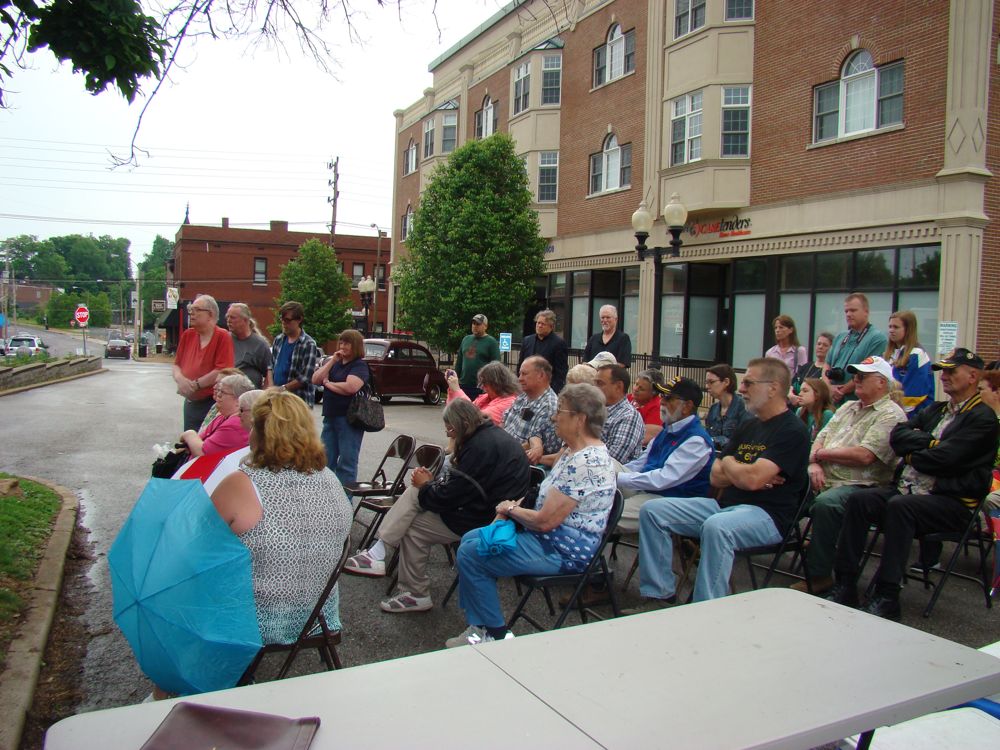
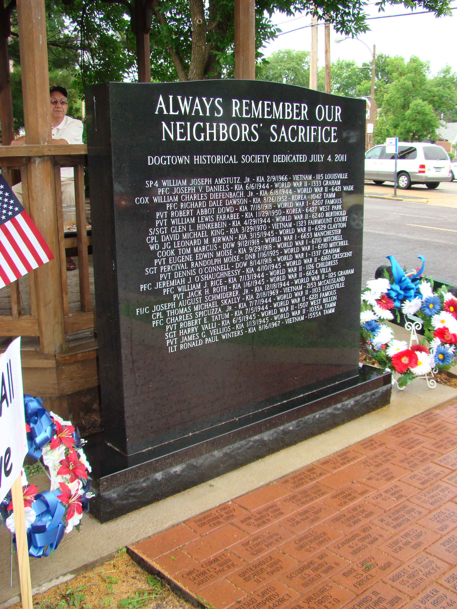
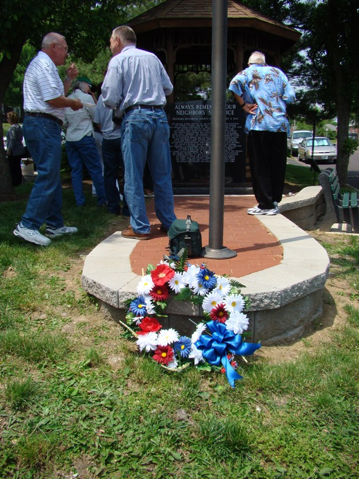
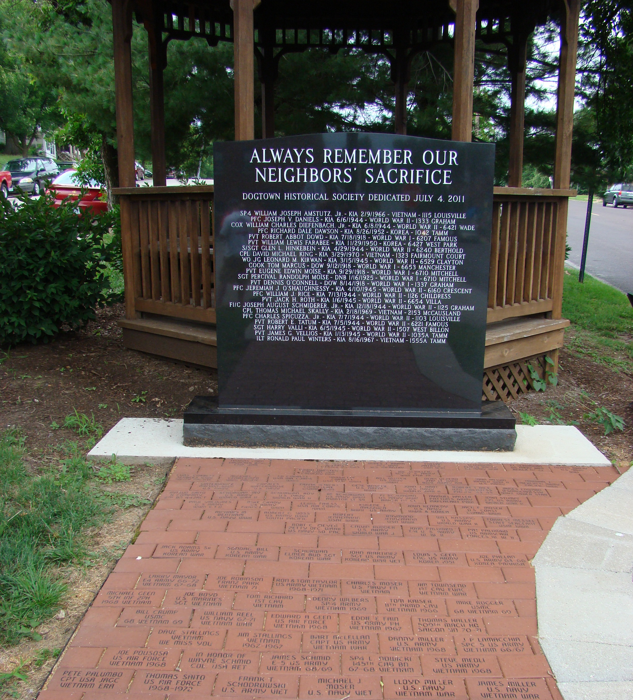
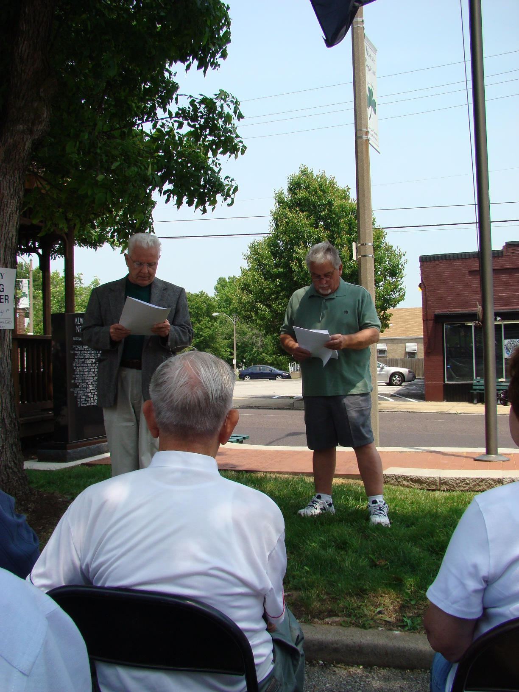

The Dogtown Veteran's Memorial Park is located at the intersection of Clayton and Tamm Avenues.
The final stage of the dedication of the Dogtown Veteran's Memorial Park took place at noon on the Sunday of Veterans Day Weekend; November 13, 2013. At that dedication, on a beautiful fall day, the first 61 personalized memorial bricks laid in the area in front of the monument stone and engraved with the names of Dogtown veterans, were blessed by Father John Johnson of St. James the Greater Parish Church.
Please contact Bob Corbett if you know of any Dogtown family or Dogtown Veteran who would like to have an engraved brick placed in the Veteran's Memorial Brick Garden.
| Contact us | | | DHS | | | Names on Stone | | | Donors List | | | Veteran's Info | | | Dogtowner Lists | | | Drummer Boy |
 |  |
|---|---|
| Attendees at Dedication - 2014 | Stone with wreaths - 2014 |
 |  |
|---|---|
| Wreath placed near brick garden - 2013 | Brick Garden with Stone - 2011 |
 | 
|
|---|---|
| Bob and John Corbett - Hosts for Dedication Ceremony | Some Attendees at the Dedication |
| HOME | DOGTOWN |
| Bibliography | Oral history | Recorded history | Photos |
| YOUR page | External links | Walking Tour |